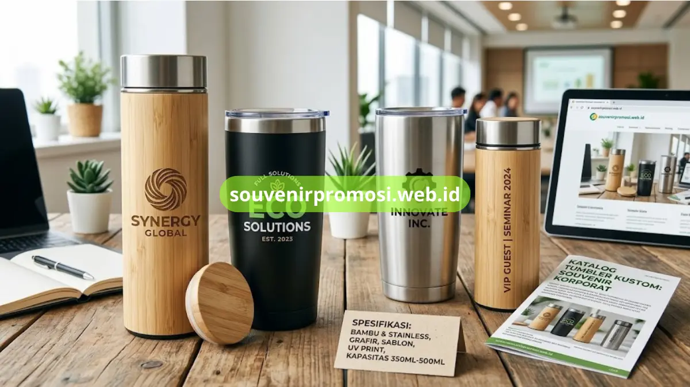
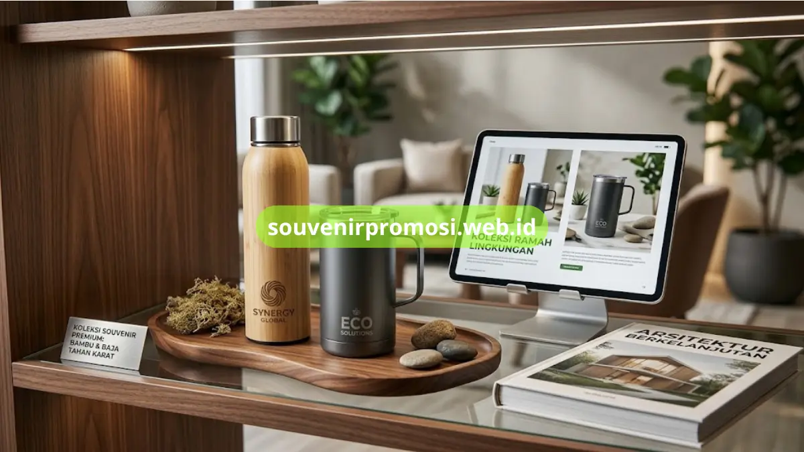

Poin Penting
- Dua material utama: bambu eksklusif dan stainless steel food grade.
- Metode cetak logo meliputi grafir laser, sablon, dan UV printing.
- Kapasitas dan warna dapat disesuaikan dengan kebutuhan pemesanan.
- Cocok untuk souvenir kantor, seminar, dan hadiah klien korporat.
- Pemesanan dan konsultasi desain dilayani langsung oleh tim souvenirpromosi.web.id.
Daftar Isi
- Apa Itu Tumbler Custom Ramah Lingkungan untuk Souvenir Perusahaan?
- Spesifikasi Material Tumbler Bambu dan Stainless Steel Ramah Lingkungan
- Opsi Custom Logo dan Metode Cetak pada Tumbler Custom Ramah Lingkungan
- Varian Kapasitas dan Warna Tumbler Custom yang Tersedia
- Berapa Jumlah Minimum Pemesanan Tumbler Custom Ramah Lingkungan?
- FAQ
Tumbler custom ramah lingkungan adalah produk drinkware berbahan bambu atau stainless steel yang dicetak logo perusahaan untuk kebutuhan souvenir kantor, seminar, atau hadiah klien. Produk ini tersedia dalam beberapa varian kapasitas dan metode cetak yang dapat disesuaikan dengan identitas visual brand. Seluruh varian tumbler custom ramah lingkungan dapat dilihat dan dipesan langsung melalui katalog souvenirpromosi.web.id.
Apa Itu Tumbler Custom Ramah Lingkungan untuk Souvenir Perusahaan?
Tumbler custom ramah lingkungan merupakan wadah minum yang diproduksi dari material alami atau tahan lama, kemudian diberi cetakan logo sebagai media branding perusahaan. Produk ini umumnya dipesan oleh divisi marketing atau HRD untuk dibagikan kepada karyawan baru, klien, maupun peserta acara internal.
Tumbler jenis ini digunakan setiap hari oleh penerimanya, sehingga posisi logo pada bodi tumbler tetap terlihat dalam berbagai aktivitas, baik di lingkungan kantor maupun di luar ruangan.
Spesifikasi Material Tumbler Bambu dan Stainless Steel Ramah Lingkungan
Souvenirpromosi.web.id menyediakan dua kategori material utama untuk lini tumbler custom ramah lingkungan, masing-masing dengan karakteristik tampilan dan fungsi yang berbeda.
Tumbler Bambu Eksklusif
Tumbler bambu eksklusif menggunakan lapisan luar bambu solid yang dipadukan dengan tabung dalam berbahan stainless steel. Tampilan natural pada bagian luar membuat varian ini banyak dipilih untuk souvenir tamu VIP, direksi, dan mitra bisnis pada acara formal. Area permukaan bambu memberikan hasil cetak logo yang khas melalui teknik grafir laser.

Tumbler Stainless Steel Foodgrade
Tumbler stainless steel foodgrade dirancang dengan lapisan dinding ganda untuk menahan suhu isi minuman lebih lama dibandingkan tumbler berbahan plastik. Varian ini tersedia dalam beberapa pilihan warna bodi sehingga dapat disesuaikan dengan skema warna corporate identity perusahaan.
Opsi Custom Logo dan Metode Cetak pada Tumbler Custom Ramah Lingkungan
Setiap pemesanan tumbler custom ramah lingkungan di souvenirpromosi.web.id dapat dilengkapi dengan beberapa metode cetak logo, yaitu grafir laser untuk permukaan bambu atau metal, sablon untuk desain satu hingga dua warna, serta UV printing untuk desain logo full color. Tim produksi menyesuaikan metode cetak dengan material tumbler yang dipilih agar hasil akhir logo tetap presisi dan tahan terhadap pemakaian harian.
Varian Kapasitas dan Warna Tumbler Custom yang Tersedia
Katalog tumbler custom ramah lingkungan di souvenirpromosi.web.id mencakup beberapa pilihan kapasitas, mulai dari ukuran ringkas untuk penggunaan di meja kerja hingga ukuran lebih besar untuk aktivitas luar ruangan. Pilihan warna bodi tumbler stainless dapat disesuaikan per batch pemesanan, sementara tumbler bambu tersedia dalam tampilan natural kayu sebagai ciri khas utamanya.
Berapa Jumlah Minimum Pemesanan Tumbler Custom Ramah Lingkungan?
Jumlah pemesanan tumbler custom ramah lingkungan dapat disesuaikan dengan kebutuhan acara maupun program internal perusahaan, mulai dari kebutuhan skala kecil hingga pemesanan grosir untuk seluruh karyawan.
Estimasi waktu produksi umumnya menyesuaikan jumlah unit, metode cetak, dan ketersediaan stok material pada saat pemesanan dilakukan. Detail jumlah dan estimasi waktu terbaru dapat dikonfirmasikan langsung melalui tim souvenirpromosi.web.id.
Tumbler custom ramah lingkungan, baik varian bambu maupun stainless steel, menjadi pilihan drinkware yang fungsional sekaligus efektif sebagai media branding jangka panjang. Segera kunjungi souvenirpromosi.web.id untuk memilih material, menentukan metode cetak logo, dan memesan tumbler custom ramah lingkungan untuk kebutuhan perusahaan Anda.